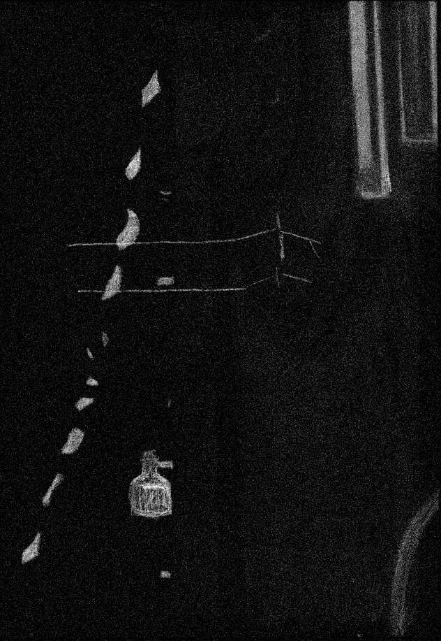
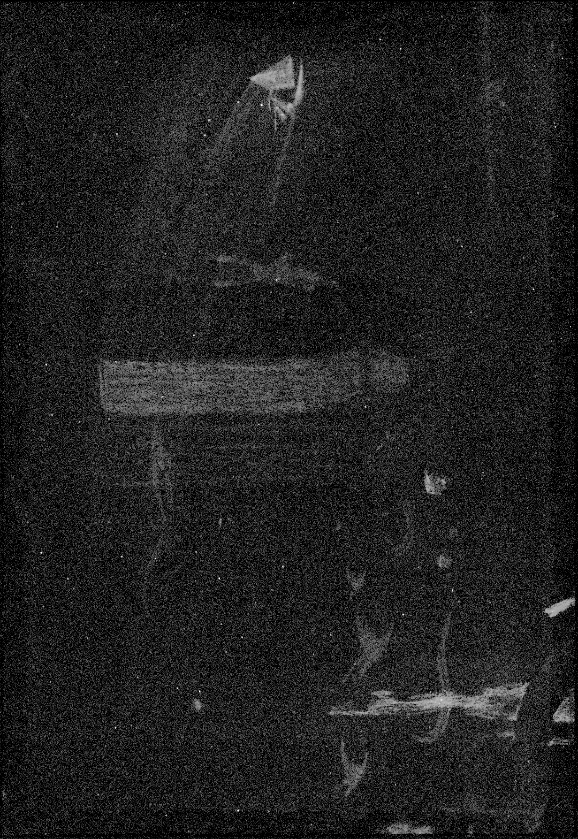

**Léon Spilliaert**
*Boîtes devant une glace*
MRBAB, inv. 4898 Léon Spilliaert est passé maître dans l'art de représenter son environnement immédiat sous la forme de **natures mortes** profondément méditatives. Dans les années 1900, il réalisa une série d'œuvres dépeignant la maison de ses parents à Ostende, qui lui servait également d'atelier. En resserrant souvent le cadrage de ses compositions, il concentrait son attention sur quelques objets et sur leurs interactions silencieuses — ici, les boîtes aux couleurs vives et les petits flacons de formes variées dont il était constamment entouré, son père exerçant le métier de parfumeur. Il emploie pour cette œuvre principalement le **pastel tendre**, estompé en couches lisses, accentuant certains passages au moyen de crayons à l'huile ou à la cire, comme le reflet sur le globe de verre et les côtés des boîtes. Fait remarquable, il utilisa également le même crayon rouge pour la chaise, pour sa signature et dans presque tout l'arrière-plan, sous forme d'une fine couche superposée aux aplats de pastel bleu et vert (fig. 1) créant ainsi des textures et de riches effets chromatiques. En juin 1929, Paul Desmeth, alors propriétaire de l'œuvre, demanda à Spilliaert de retoucher, à l'aide d'un « crayon Conté noir », une zone de l'arrière-plan noir en haut à droite endommagée par des moisissures.

Fig. 1 : Microphotographie d'un crayon rouge sur une couche de pastel vert
Si l'**imagerie technique** n'a pas permis d'évaluer l'ampleur exacte de cette réintervention, elle a en revanche contribué à identifier certains **pigments** et matériaux employés par Spilliaert ; vous pouvez utiliser la tablette près de l'œuvre pour les découvrir ! La cartographie Macro-XRF de l'élément mercure montre que le crayon rouge contient du vermillon (fig. 2), un pigment couramment utilisé à l'époque.

Fig. 2 : Carte Macro-XRF de l'élément mercure
Du fer a été détecté tant dans la boîte orange que dans les traits jaunes, indiquant la présence probable de pigments naturels tels que les ocres ; mais on en retrouve également dans la boîte bleue, révélant que le bleu de Prusse, pigment à base de fer, faisait lui aussi partie de la palette de l'artiste (fig. 3).

Fig. 3 : Carte Macro-XRF de l'élément fer
La cartographie Macro-XRF du plomb (L), du chrome et du zinc a en outre permis la découverte d'une composition cachée au verso de la feuille, dont seules des formes et des lignes indistinctes nous sont parvenues (fig. 4, 5, 6).

Fig. 4 : Carte Macro-XRF de l'élément plomb

Fig. 5 : Carte Macro-XRF de l'élément chrome

Fig. 6 : Carte Macro-XRF de l'élément zinc
Comme le papier est collé sur un support carton, cette œuvre dissimulée demeure inaccessible, mais des recherches sont en cours afin de tenter d'en identifier le sujet par comparaison avec des compositions connues de la même période.
*Crédits photos : © MRBAB, Bruxelles / photo : J. Geleyns - Art Photography | © photo : KU Leuven/Marie-Noëlle Grison | © Image by KIK-IRPA, licensed under CC BY 4.0 (https://creativecommons.org/licenses/by/4.0/)*
*Boîtes devant une glace*
MRBAB, inv. 4898 Léon Spilliaert est passé maître dans l'art de représenter son environnement immédiat sous la forme de **natures mortes** profondément méditatives. Dans les années 1900, il réalisa une série d'œuvres dépeignant la maison de ses parents à Ostende, qui lui servait également d'atelier. En resserrant souvent le cadrage de ses compositions, il concentrait son attention sur quelques objets et sur leurs interactions silencieuses — ici, les boîtes aux couleurs vives et les petits flacons de formes variées dont il était constamment entouré, son père exerçant le métier de parfumeur. Il emploie pour cette œuvre principalement le **pastel tendre**, estompé en couches lisses, accentuant certains passages au moyen de crayons à l'huile ou à la cire, comme le reflet sur le globe de verre et les côtés des boîtes. Fait remarquable, il utilisa également le même crayon rouge pour la chaise, pour sa signature et dans presque tout l'arrière-plan, sous forme d'une fine couche superposée aux aplats de pastel bleu et vert (fig. 1) créant ainsi des textures et de riches effets chromatiques. En juin 1929, Paul Desmeth, alors propriétaire de l'œuvre, demanda à Spilliaert de retoucher, à l'aide d'un « crayon Conté noir », une zone de l'arrière-plan noir en haut à droite endommagée par des moisissures.
Design et développement web Marie-Noëlle Grison & Robert G. Erdmann